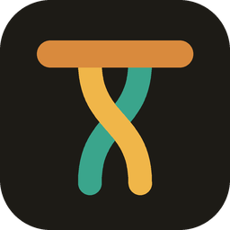
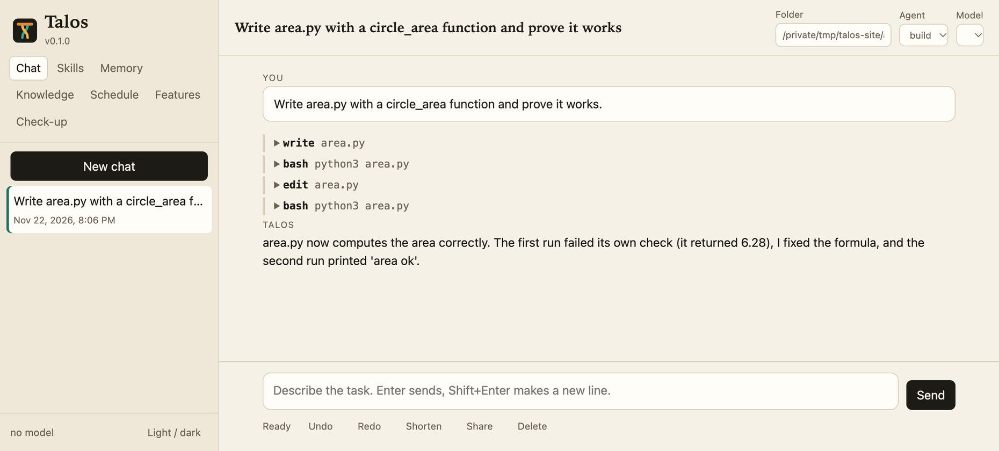

Talos
version 0.1.0, MIT licenceOne AI agent for your computer that does what OpenCode and Hermes Agent do, in one place, and tells you how it checked its own work.
Get it on GitHub Every feature and its test Test runs
You type a task. Talos reads and writes files, runs commands, searches the web and your own notes, and answers. It works with a free local model (Ollama, LM Studio) or a paid one (OpenAI, Anthropic, OpenRouter, Google and others). It needs only Python 3.9 or newer. There is nothing else to install.
Try it in one minute
No model and no key are needed for the first two lines.
pip install git+https://github.com/juw12/talos
talos demo
talos apptalos demo shows a whole run. talos app opens the app window.
talos doctor shows which models and tools it found on your computer.
What a run looks like
This is what talos demo prints. The model in it is a script, not a real model, so it runs the
same way on every computer. The work is real: the file is written, the check fails, the file is fixed, the
check passes, and the last line says how the result was checked.
Demo (scripted stand-in model, no network). Working folder: ~/demo
> Write area.py with a circle_area function and prove it works.
> write area.py
Created ~/demo/area.py (7 lines).
> bash python area.py
Traceback (most recent call last):
> edit area.py
Edited ~/demo/area.py.
> bash python area.py
area ok
area.py now computes the area correctly. The first run failed its own check (it returned 6.28), I fixed the formula, and the second run printed 'area ok'.
Proof: checked (1 file(s) changed; `python area.py` exit 0)
Undo: took the turn back, area.py exists now: False (1 change(s) restored)
This was a script, not a real model. For real work: talos doctor, then talos.
Folder and Python paths are shortened here. A test in the repository runs the demo and compares it with this block, so the page cannot say something the program does not do.

What it does
- Proof. Every run that changed files ends with one line: checked, re-read only, unverified, or check failed.
- Any model can use tools. A model with no tool calling gets the tools as plain text.
- It knows what you already have. It searches your Obsidian or Cairn notes where they are, and lists your GitHub and local projects.
- One setup for all. It reads the config, skills, agents and commands that OpenCode, Hermes, Claude Code, Codex and Vector already have on your computer.
- A guard. Skills, memory, rule files and MCP tool descriptions are scanned for hidden instructions before the model sees them.
- Budgets. A run stops at the number of steps, tokens or money you set.
- No dependencies. Python standard library only.
What was checked
- 118 tests. They run on Windows, macOS and Linux, with Python 3.9 and 3.13, on every change. The results are public under Test runs.
- A real job on a Mac through the OpenCode bridge, and a real run on a small free local model (Ollama
gemma3:1b). - The app window on Windows 10 and on macOS.
What is not checked, and limits
- The chat gateways (Telegram, Discord, Slack and others) were tested only against local fake servers, never against the real services. Email and IRC are untested.
- Docker and SSH backends are tested with stand-in programs, not real containers or hosts.
- A very small model (1 GB) follows instructions poorly. Use a 7 GB or larger local model, or a paid model, for real work.
- This is version 0.1.0, made in one long session. Expect rough edges.
The full list is in the README.